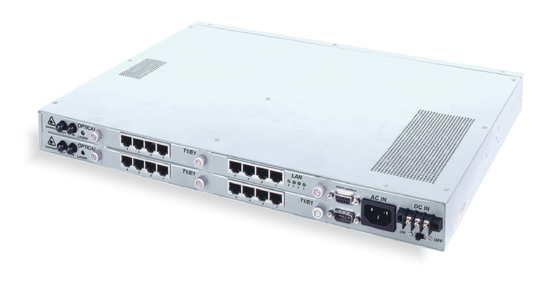

Тема №5. Устройство и эксплуатация цифровых систем телекоммуникаций.
Занятие №11. Оптическая система доступа PDH.
1. Применение оптических мультиплексоров в сетях связи.
Первичная цифровая сеть на основе PDH/SDH состоит из:
- узлов мультиплексирования (мультиплексоров), выполняющих роль преобразователей между каналами различных уровней иерархии стандартной пропускной способности;
- регенераторов, восстанавливающих цифровой поток на протяженных трактах;
- цифровых кроссов, которые осуществляют коммутацию на уровне каналов и трактов первичной сети.
Схематично структура первичной сети представлена на рис. 1. Как видно из рисунка, первичная сеть строится на основе типовых каналов, образованных системами передачи. Современные системы передачи используют в качестве среды передачи сигналов электрический и оптический кабель, а также радиочастотные средства (радиорелейные и спутниковые системы передачи).
Цифровой сигнал типового канала имеет определенную логическую структуру, включающую цикловую структуру сигнала и тип линейного кода. Цикловая структура сигнала используется для синхронизации, процессов мультиплексирования и демультиплексирования между различными уровнями иерархии каналов первичной сети, а также для контроля блоковых ошибок.
Линейный код обеспечивает помехоустойчивость передачи цифрового сигнала. Аппаратура передачи осуществляет преобразование цифрового сигнала с цикловой структурой в модулированный электрический сигнал, передаваемый затем по среде передачи. Тип модуляции зависит от используемой аппаратуры и среды передачи.
Таким образом, внутри цифровых систем передачи осуществляется передача электрических сигналов различной структуры, на выходе цифровых систем передачи образуются каналы цифровой первичной сети, соответствующие стандартам по скорости передачи, цикловой структуре и типу линейного кода.
Обычно каналы первичной сети приходят на узлы связи и оканчиваются в линейно-аппаратном цехе (ЛАЦе), откуда кроссируются для использования во вторичных сетях. Можно сказать, что первичная сеть представляет собой банк каналов, которые затем используются вторичными сетями (сетью телефонной связи, сетями передачи данных, сетями специального назначения и т.д.). Существенно, что для всех вторичных сетей этот банк каналов един, откуда и вытекает обязательное требование, чтобы каналы первичной сети соответствовали стандартам.
Современная цифровая первичная сеть строится на основе трех основных технологий: плезиохронной иерархии (PDH), синхронной иерархии (SDH) и асинхронного режима переноса (передачи) (ATM). Из перечисленных технологий только первые две в настоящее время могут рассматриваться как основа построения цифровой первичной сети.
ATM – это молодая, но уже востребованная технология построения первичной сети. Она отличается от технологий PDH и SDH тем, что охватывает не только уровень первичной сети, но и технологию вторичных сетей, в частности, сетей передачи данных и широкополосной ISDN (B-ISDN). В результате при рассмотрении технологии ATM трудно отделить ее часть, относящуюся к технологии первичной сети, от части, тесно связанной со вторичными сетями.
1.1 Схемы плезиохронной цифровой иерархии - PDH.
Рассмотрим более подробно историю построения и отличия плезиохронной и синхронной цифровых иерархий. Схемы ПЦС были разработаны в начале 80х. Всего их было три:
- первая принята в США и Канаде, в качестве скорости сигнала первичного цифрового канала ПЦК (DS1) была выбрана скорость 1544 кбит/с и давала последовательность DS1 - DS2 - DS3 - DS4 или последовательность вида: 1544 - 6312 - 44736 - 274176 кбит/с. Это позволяло передавать соответственно 24, 96, 672 и 4032 канала DS0 (ОЦК 64 кбит/с);
- вторая принята в Японии, использовалась та же скорость для DS1; давала последовательность DS1 - DS2 - DSJ3 - DSJ4 или последовательность 1544 - 6312 - 32064 - 97728 кбит/с, что позволяло передавать 24, 96, 480 или 1440 каналов DS0;
- третья принята в Европе и Южной Америке, в качестве первичной была выбрана скорость 2048 кбит/с и давала последовательность E1 - E2 - E3 - E4 - E5 или 2048 - 8448 - 34368 - 139264 - 564992 кбит/с. Указанная иерархия позволяла передавать 30, 120, 480, 1920 или 7680 каналов DS0.
Комитетом по стандартизации ITU - T был разработан стандарт, согласно которому:
- во-первых, были стандартизированы три первых уровня первой иерархии, четыре уровня второй и четыре уровня третьей иерархии в качестве основных, а также схемы кросс-мультиплексирования иерархий;
- во-вторых, последние уровни первой и третьей иерархий не были рекомендованы в качестве стандартных.
Указанные иерархии, известные под общим названием плезиохронная цифровая иерархия PDH, или ПЦИ, сведены в таблицу 1.
| Уровень цифровой иерархии | Скорости передач, соответствующие различным схемам цифровой иерархии | ||
|---|---|---|---|
| AC: 1544 кбит/с | ЯС: 1544 кбит/с | EC: 2048 кбит/с | |
| 0 | 64 | 64 | 64 |
| 1 | 1544 | 1544 | 2048 |
| 2 | 6312 | 6312 | 8448 |
| 3 | 44736 | 32064 | 34368 |
| 4 | - | 97728 | 139264 |
Примечание: АС-американская; ЯС-японская; ЕС-европейская.
При использовании жесткой синхронизации при приеме/передаче можно было бы применить метод мультиплексирования с чередованием октетов или байтов, как это делалось при формировании цифровых сигналов первого уровня, для того, чтобы иметь принципиальную возможность идентификации байтов или групп байтов каждого канала в общем потоке. Однако учитывая, что общая синхронизация входных последовательностей, подаваемых на мультиплексор от разных абонентов/пользователей, отсутствует, в схемах второго и более высокого уровней мультиплексирования был использован метод мультиплексирования с чередованием бит (а не байт). В этом методе мультиплексор, например, второго уровня формирует выходную цифровую последовательность (С скоростью 6 Мбит/с - АС, ЯС или 8 Мбит/с - ЕС) путем чередования бит входных последовательностей от разных каналов (для АС и ЯС это каналы Т1, а для ЕС - каналы Е1).
Так как мультиплексор не формирует структуры, которая могла бы быть использована для определения позиции бита каждого канала, а входные скорости разных каналов могут не совпадать, то используется внутренняя побитовая синхронизация. Мультиплексор сам выравнивает скорости входных потоков путем добавления нужного числа выравнивающих бит в каналы с относительно меньшими скоростями передачи (наиболее простой вариант, хотя могут использоваться другие варианты, когда выравнивание скоростей осуществляется путем изъятия бит из каналов с большими скоростями, или сочетаются оба процесса добавления/изъятия). Благодаря этому на выходе мультиплексора формируется синхронизированная цифровая последовательность. Информация о вставленных/изъятых битах передается по служебным каналам, формируемым отдельными битами в структуре фрейма.
На последующих уровнях мультиплексирования эта схема повторяется, добавляя новые выравнивающие биты. Эти биты затем удаляются/добавляются при демультиплексировании на приемной стороне для восстановления исходном цифровой последовательности. Такой процесс передачи получил название плезиохронного (т.е. почти синхронного), а цифровые иерархии АС, ЯС и ЕС соответственно название плезиохронных цифровых иерархий - PDH.
Кроме синхронизации, на уровне мультиплексора второго порядка также происходит формирование фреймов и мультифреймов, которые позволяют структурировать последовательность в целом. Например, для канала Т2 (6312 кбит/с) длина фрейма равна 789 бит при естественном сохранении частоты повторения фрейма 8000 Гц. Мультифрейм соответствует 12 фреймам. Для канала Е2 (8448 кбит/с) длина фрейма равна 1056 бит, и также может быть использован мультифрейм из 12 фреймов. Формирование фреймов и мультифреймов и их выравнивание особенно важно для локализации на приемной стороне каждого фрейма, что позволяет в свою очередь получить информацию о сигнализации и кодовых группах контролирующих избыточных кодов CRC и информацию служебного канала данных.
В АС используется два уровня мультиплексирования - 1.5 → 6 и 6 → 45 плюс один возможный дополнительный 45 → 140 для сопряжения с ЕС.
В ЯС используются три уровня мультиплексирования -1.5 → 6, 6 → 32 и 32 → 98 плюс один возможный дополнительный 32 → 140 для сопряжения с ЕС.
В ЕС используются три уровня мультиплексирования - 2 → 8, 8 → 34 и 34 → 140.
Общая схема канала передачи с использованием технологии PDH даже в самом простом варианте топологии сети "точка - точка" на скорости 140 Мбит/с должна включать три уровня мультиплексирования на передающей стороне (для ЕС, например, 2 → 8, 8 → 34 и 34 → 140) и три уровня демультиплексирования на приемной стороне. Это приводит к достаточно сложной аппаратурной реализации таких систем. Однако существенное удешевление цифровой аппаратуры за последнее десятилетие и использование оптоволоконных кабелей в качестве среды передачи PDH сигнала привели к тому, что системы цифровой телефонии с использованием технологии PDH получили значительное распространение. Эти системы позволили транспортировать большое количество каналов цифровой высококачественной телефонной связи. Например, один канал 140 Мбит/с эквивалентен 1920 (30x4x4x4=1920) каналам 64 кбит/с, которые в первую очередь использовались для передачи речи, но могут быть использованы, в частности, для передачи данных.
С использованием современных методов ИКМ (например дифференциальной ИКМ - ДИКМ) можно использовать скорость 32 кбит/с для передачи одного речевого канала, что приводит к схемам каналов Т1 или Е1, несущих 48 или 60 телефонных каналов. Современная техника сжатия данных позволила последовательно увеличить эти показатели в 2 раза (16 кбит/с на речевой канал), затем в 4 раза (8 кбит/с на канал) и, наконец, благодаря использованию техники кодирования с линейным предсказанием по кодовой книге, в 5 раз (6,4 кбит/с на канал).
Более важным результатом этого развития, однако, с нашей точки зрения, стало то, что PDH системами стали пользоваться для передачи данных, используя главным образом каналы 64 кбит/с с протоколом пакетной коммутации Х.25. Казалось, что от этого привлекательность новой технологии только выиграет за счет привлечения новой мощной группы пользователей. Однако этого не произошло. PDH технология продемонстрировала на этом этапе возросшего к ней интереса свою негибкость.
1.2. Основные недостатки PDH.
- затруднённый ввод/вывод цифровых потоков в промежуточных пунктах;
- отсутствие средств сетевого автоматического контроля и управления;
- многоступенчатое восстановление синхронизма требует достаточно большого времени;
- также можно считать недостатком наличие трёх различных иерархий.
2. Состав оборудования оптических мультиплексоров.
2.1. Оптическая система доступа PDH FlexGain FOM16E
2.1.1. Предназначение.
Оптический мультиплексор FlexGain FOM16E представляет собой оборудование линейного тракта для одновременной дуплексной передачи 8 или 16 цифровых потоков Е1 G.703 со скоростью 2048 кбит/с каждый, по двум или одному ненагруженным волокнам оптического кабеля или для передачи смешанного TDM+IP-трафика.
Мультиплексор FlexGain FOM16E имеет 4 платоместа для установки трибутарных модулей: 4хЕ1, модулей интерфейса Ethernet 10/100BaseT со скорость передачи данных до 8,448 Мбит/с или интерфейсных модулей V.35 n*64 (n=1..32, 64, 128). Два специализированных платоместа предназначены для установки основного и резервного оптических приёмопередатчиков. Переключение между основным и резервным приёмопередатчиками производится автоматически. Время переключения – не более 60 мс.
FlexGain FOM16E может применяться:
- для объединения локальных сетей (LAN);
- как оборудование линейного тракта систем передачи дляорганизации абонентского выноса;
- для передачи цифрового потока по волоконно-оптическим соединительным линиям;
- для передачи речи и данных вдоль технологических объектов.
2.1.2. Основные тактико-технические характеристики.
2.1.2.1. Интерфейс Е1.
Тип разъёма
RJ-45, розетка
Сопротивление
120 Ом
Скорость сигнала
2048 кбит/с ±50 ppm
Линейный код
HDB3
Стандарт
G.703
Фазовые дрожания
в соответствии с рек. G.742, G.823
2.1.2.2. Интерфейс LAN (Ethernet).
Тип интерфейса
10/100BaseT
Тип разъёма
RJ-45
Количество портов
4 порта
Линейная скорость
8448 кбит/с ±50 ppm
2.1.2.3. Интерфейс V.35.
Тип интерфейса
V.35
Тип разъёма
DB-25
Количество портов
1 порт
Линейная скорость
n*64, n=1..32, 64, 128
2.1.2.4. Оптический интерфейс.
Тип лазерного диода
MLM-1310 нм/ MLM-1550 нм
Тип разъёма
FC/SC (для wom-приёмопередатчика)
Рабочая длина волны
1310±30 нм/ 1550±30 нм
Линейное кодирование
Скремблированный NRZ
Выходная мощность (пиковая)
-7..-15 дБм для 1310 нм/ 0..-2 дБм для 1550 нм
Чувствительность по приёму
-34 с коэфф. ошибок 10^10
Перекрываемое затухание
>19 дБ для 1310 нм/ >36 дБ для 1550 нм
Резервирование
1+0 или 1+1
Защита от электромагнитных помех
в соответствии с рекю CISPR22 класс А
2.1.2.5. Дополнительные функции.
SNMP-управление
Возможность подключения внешней аварийной сигнализации
Возможность установки различных видов тестовых шлейфов
2.1.2.6. Требования к электропитанию.
Напряжение питания
DC: -48/-60В (диапазон от -36 В до -72 В)
АС: 90-260 В
Потребляемая мощность
не более 30 Вт в конфигурации 1+1
2.1.2.7. Условия эксплуатации.
Температурный диапазон
От 0 ⁰С до +60 ⁰С
Относительная влажность
5..95%
2.1.2.8. Габариты.
Шасси для 19" стойки (ВхШхГ)
45х436х330 мм

Рис. 2. PDH FlexGain FOM16E.
2.2. Оптическая система доступа PDH FlexGain FOM16E, V.1
2.2.1. Предназначение.
| Тип разъёма | RJ-45, розетка |
| Сопротивление | 120 Ом |
| Скорость сигнала | 2048 кбит/с ±50 ppm |
| Линейный код | HDB3 |
| Стандарт | G.703 |
| Фазовые дрожания | в соответствии с рек. G.742, G.823 |
| Тип интерфейса | 10/100BaseT |
| Тип разъёма | RJ-45 |
| Количество портов | 4 порта |
| Линейная скорость | 8448 кбит/с ±50 ppm |
| Тип интерфейса | V.35 |
| Тип разъёма | DB-25 |
| Количество портов | 1 порт |
| Линейная скорость | n*64, n=1..32, 64, 128 |
| Тип лазерного диода | MLM-1310 нм/ MLM-1550 нм |
| Тип разъёма | FC/SC (для wom-приёмопередатчика) |
| Рабочая длина волны | 1310±30 нм/ 1550±30 нм |
| Линейное кодирование | Скремблированный NRZ |
| Выходная мощность (пиковая) | -7..-15 дБм для 1310 нм/ 0..-2 дБм для 1550 нм |
| Чувствительность по приёму | -34 с коэфф. ошибок 10^10 |
| Перекрываемое затухание | >19 дБ для 1310 нм/ >36 дБ для 1550 нм |
| Резервирование | 1+0 или 1+1 |
| Защита от электромагнитных помех | в соответствии с рекю CISPR22 класс А |
| SNMP-управление |
| Возможность подключения внешней аварийной сигнализации |
| Возможность установки различных видов тестовых шлейфов |
| Напряжение питания |
DC: -48/-60В (диапазон от -36 В до -72 В)
АС: 90-260 В |
| Потребляемая мощность | не более 30 Вт в конфигурации 1+1 |
| Температурный диапазон | От 0 ⁰С до +60 ⁰С |
| Относительная влажность | 5..95% |
| Шасси для 19" стойки (ВхШхГ) | 45х436х330 мм |
Для передачи 4..16 цифровых потоков Е1 G.703 и Ethernet-трафика со скоростью до 100 Мбит/с по одному или двум оптическим волокнам.
Мультиплексор FlexGain FOM16E, V.1 обеспечивает 1+1 схему резервирования оптического тракта, ручную настройку при помощи кнопок, встроенное Telnet- и SNMP-управление, контроль функционирования и сбор статистики. Для обеспечения гибкости и наилучшей экономической эффективности в FG FOM-16E, V.1 применяются SFP-приёмопередатчики, которые позволяют выбирать тот или другой тип приёмопередатчика в зависимости от длины и состояния оптической линии. Встроенный Ethernet-коммутатор с четырьмя портами позволяет обрабатывать VLAN-пакеты с признаком двойного тегирования (Q in Q), поддерживает IEEE 802.1p и функцию MDIX для каждого Ethernet- порта.
Особенности FlexGain FOM16E, V.1:
- 4/8/16 интерфейсов Е1 120 Ом;
- 4 Ethernet 10/100BaseTX порта с обработкой VLAN с общей скоростью 100 Мбит/с;
- канал служебной связи;
- слота для SFP-модулей, SFP-приёмопередатчики на 15, 40, 80, 100 или 120 км.
2.2.2. Основные тактико-технические характеристики.
2.2.2.1. Оптические SFP-модули
| Оптические SFP-модули | FG-FO-S1.1 | FG-FO-L1.1 | FG-FO-L1.2 | FG-FO-L1.3 | FG-FO-L1.4 |
|---|---|---|---|---|---|
| Тип лазера | FP Laser | FP Laser | DFB Laser | DFB Laser | DFB Laser |
| Длина волны | 1310 nm | 1310 nm | 1550 nm | 1550 nm | 1550 nm |
| Оптический разъём | 2xLC | 2xLC | 2xLC | 2xLC | 2xLC |
| Выходная мощность | -15 ~ -8dBm | -5 ~ 0 dBm | -5 ~ 0 dBm | -3 ~ 2 dBm | 0 ~ 5 dBm |
| Чувствительность | -31 dBm | -34 dBm | -34 dBm | -34 dBm | -34 dBm |
| Мах. допустимый уровень входного сигнала | 0 dBm | 4 dBm | 4 dBm | 5 dBm/td> | 5 dBm |
| Системное усиление | 19dB | 29dB | 29dB | 31dB | 34dB |
2.2.2.2. Интерфейс Е1.
| Тип разъёма | RJ-45, розетка |
| Сопротивление | 120 Ом |
| Скорость сигнала | 2048 кбит/с ±50 ppm |
| Линейный код | HDB3 |
| Стандарт | G.703 |
| Фазовые дрожания (джиттер) | В соответствии с рек. G.823 |
2.2.2.3. Ethernet-интерфейс.
| Пропускная способность | до 3,2 Gbps |
| Размер таблицы МАС-адресов | 2048 |
| Поддерживаемые протоколы | IEEE 802.3, IEEE 802.3u, IEEE 802.3x |
| Количество VLAN | 64 |
| Тип VLAN | IEEE 802.1q Port-based, Q in Q |
| Ethernet QoS | IEEE 802.1p, DSCP, Bandwidth Control |
2.2.2.4. Входы/выходы аварийных сигналов и внешних датчиков.
| Аварии | 2 выхода Minor и Major аварии |
| Входы внешних датчиков | 2 входа |
| Электрические характеристики входов/выходов | DC: 0..60В, 1..5 мА |
2.2.2.5. Требования к электропитанию.
| Напряжение питания |
DC: -48/-60В (диапазон от -36 В до -72 В)
АС: 90-260 В |
| Потребляемая мощность | не более 30 Вт |
2.2.2.6. Условия эксплуатации.
| Температурный диапазон | От 0 ⁰С до +60 ⁰С |
| Относительная влажность | 5..90% без образования конденсата |
2.2.2.7. Габариты.
| Шасси для 19" стойки (ВхШхГ) | 44,5х436х320 мм |
2.3. Оптическая система доступа PDH FlexGain FOM4.
2.3.1. Предназначение.
Оптический мультиплексор FlexGain FOM4 представляет собой оборудование линейного тракта для одновременной дуплексной передачи 4 синхронных цифровых потоков Е1 со скоростью 2048 кбит/с каждый по двум ненагруженным волокнам оптического кабеля, одномодового или многомодового.
Модули FlexGain FOM4 имеют светодиодную индикацию для визуального контроля работоспособности. Также возможен контроль системы с любого компьютера, поддерживающего режим эмуляции терминала VT100, через интерфейс RS232. Для модулей FG-FOM4-RM (стоечное исполнение FlexGain FOM4) возможен удаленный мониторинг с помощью модуля CMU, исполняющего роль SNMP-агента централизованной сетевой системы управления.
2.3.2. Основные тактико-технические характеристики
2.3.2.1. Интерфейс Е1.
| Тип разъёма | RJ-45, для 120 Ом / BNC, для 75 Ом |
| Сопротивление | 120 Ом/ 75 Ом (только в FG-FOM4-MR-AC/DC, V3) |
| Скорость сигнала | 2048 кбит/с ±50 ppm |
| Линейный код | HDB3 |
| Стандарт | G.703 |
| Фазовые дрожания (джиттер) | В соответствии с рек. G.823, G.742 |
2.3.2.2. Оптический интерфейс.
| Тип лазерного диода | MLM-1310 нм |
| Тип разъема | FC/PC |
| Рабочая длина волны | 1310±30 нм |
| Линейное кодирование | Скремблированный NRZ |
| Выходная мощность (пиковая) | -7..-15 дБм |
| Чувствительность по приёму | -34 с коэфф. ошибок 10^10 |
| Перекрываемое затухание | >20 дБ |
| Резервирование | 1+0 |
| Защита от электромагнитных помех | в соответствии с рек/ CISPR22 класс А |
2.3.2.3. Дополнительные функци.
| Возможность подключения внешней аварийной сигнализации |
| Возможность установки различных видов тестовых шлейфов |